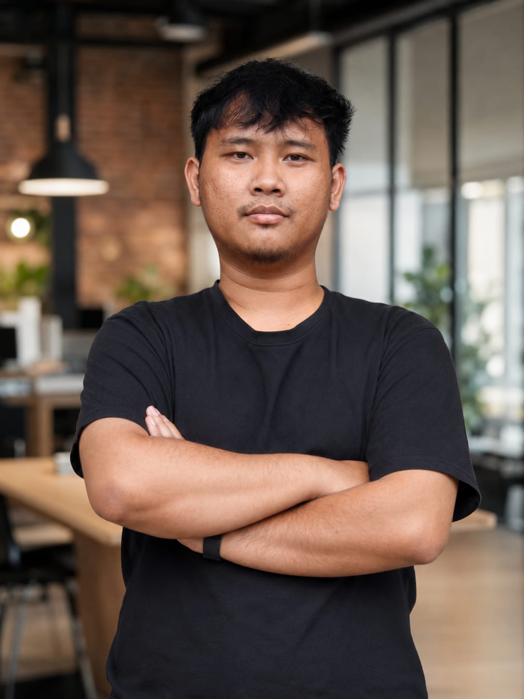

geats.AF / 26

@onicyborg
Akhmad Fauzi
Also known as Geats
Backend Developer · QA Analyst
Depok, Indonesia
Available for Work
Independent developer / Depok, Indonesia
Hi, I'm Akhmad Fauzi, also known as Fauzi. A Backend Developer and QA Analyst who builds scalable systems with Nest.js and PHP (Laravel), while ensuring their reliability through comprehensive API testing, security assessment, and automation testing. Two sides of one vision: systems that don't just run, but are provably correct.

@onicyborg
Also known as Geats
Backend Developer · QA Analyst
Depok, Indonesia
Available for Work
Core toolkit
01Skills
Technologies I master and use daily to build reliable systems.
02Services
End-to-end services tailored to your product needs, from scalable web systems to high-performance mobile apps.
03Projects
Projects that reflect my technical ability and understanding of system architecture.
04Experience
The professional journey that shaped my technical and analytical perspective.
05Contact
Have an interesting project or job opportunity? I'm always open to a discussion.
Based inDepok, West Java, Indonesia